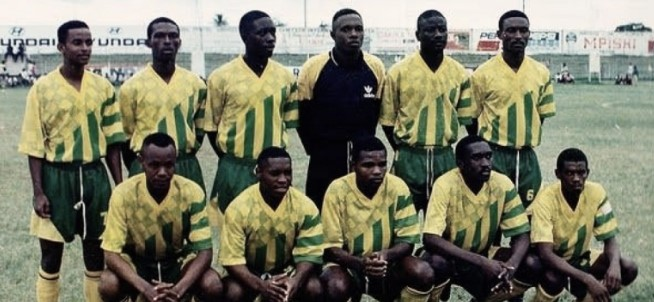

EARLY HISTORY (1997-2002)

American football evolved from the sports of association football (soccer) and rugby football. Rugby football, like American football, is a sport where two competing teams vie for control of a ball, which can be kicked through a set of goalposts or run into the opponent's goal area to score points. What is considered to be the first American football game was played on November 6, 1869 between Rutgers and Princeton, two college
THE PROFESSIONAL ERA (2008-2013)
On November 12, 1892, when William "Pudge" Heffelfinger was paid $500 to play a game for the Allegheny Athletic Association in a match against the Pittsburgh Athletic Club. This is the first recorded instance of a player being paid to participate in a game of American football, although many athletic clubs in the 1880s offered indirect benefits, such as helping players attain employment, giving out trophies or watches.
A set of rule changes drawn up from 1880 onward by Walter Camp, the "Father of American Football", established the snap, eleven-player teams, and the concept of later rule changes legalized the forward pass, created the neutral zone, and specified the size and shape of the football. American football as a whole is the most popular sport in the United States; professional football and college football are the most popular forms of the game, with the other major levels being high school and youth football.

EVOLUTION OF THE GAME (2002-2008)
The introduction of the snap resulted in unexpected consequences. Prior to the snap, the strategy had been to punt if a scrum resulted in bad field position. However, a group of Princeton players realized that, as the snap was uncontested, they now could hold the ball indefinitely to prevent their opponent from scoring. In 1881, both teams in a game between Yale-Princeton used this strategy to maintain their undefeated records.
2015 SENIOR WORLD CHAMPIONSHIP
American football evolved in the United States, originating from the sports of association football and rugby football. The first game of American football was played on November 6, 1869, between two college teams, Rutgers and Princeton, under rules based on the association football rules of the time. During the latter half of the 1 870s,
American football evolved in the United States, originating from the sports of association football and rugby football. The first game of American football was played on November 6, 1869, between two college teams, Rutgers and Princeton, under rules based on the association football rules of the time. During the latter half of the 1870s, colleges playing association football switched to the Rugby Union code, which allowed carrying the ball. A set of rule changes drawn up from 1880 onward by Walter Camp, the "Father of American Football", established the snap, eleven-player teams, and the concept of downs; later rule changes legalized the forward pass, created the neutral zone, and specified the size and shape of the football.
2013 The Canadian Men's National Team is named the Team of the Year
The term "football" was officially established in the rulebook for the 1 876 college football season, when the sport first shifted from soccer-style rules to rugby-style rules; although it could easily have been called "rugby" at this point, Harvard, one of the primary proponents of the rugby-style game.
2008 Canada successfully hosts the Women's World Championship in Toronto, Ontario
In the United States, American football is referred to as "football. In English-speaking countries where other codes of football are popular, such as the United Kingdom, Ireland, Canada, New Zealand, and Australia, the terms "gridiron" or "American football" are favored instead.
2002 The Canadian Men's National Team is named the Team of the Year
What is considered to be the first American football game was played on November 6, 1 869 between Rutgers and Princeton, two college teams. The game was played between two teams of 25 players each and used a round ball that could not be picked up or carried.